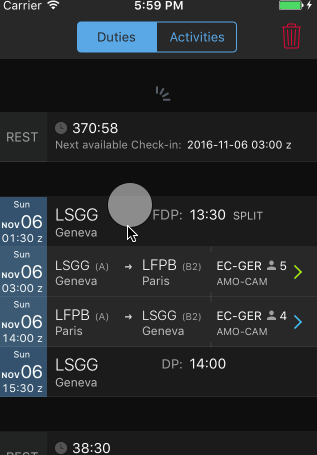
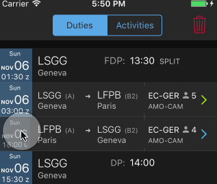
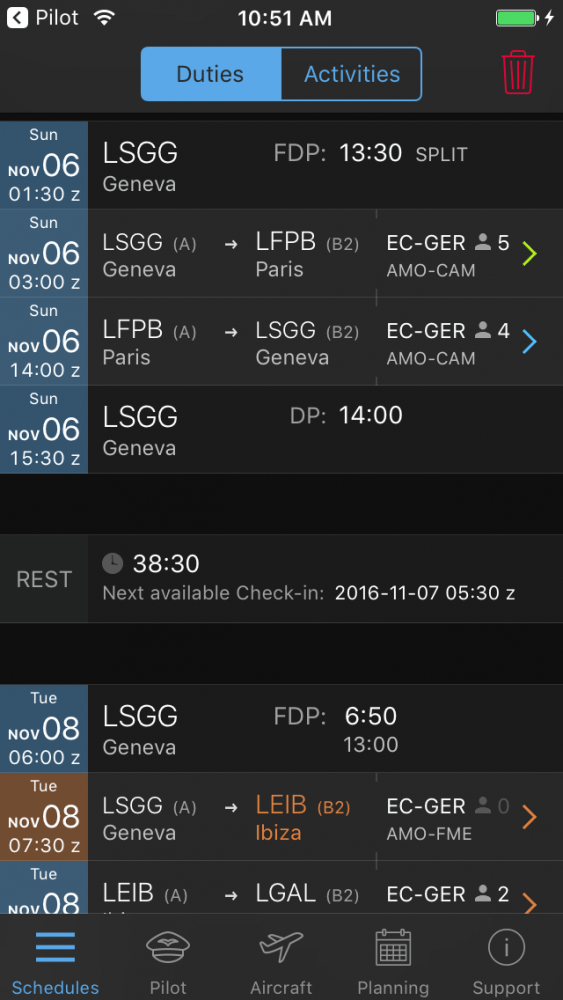
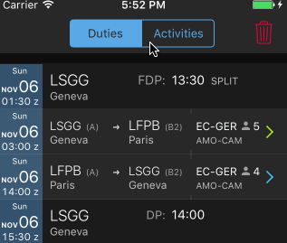
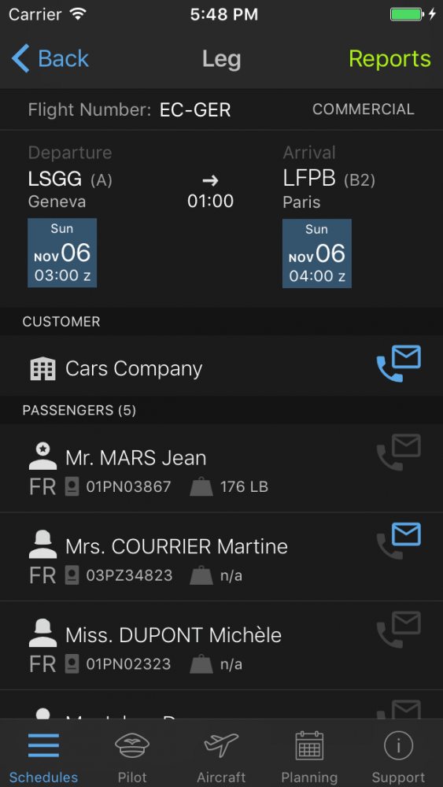
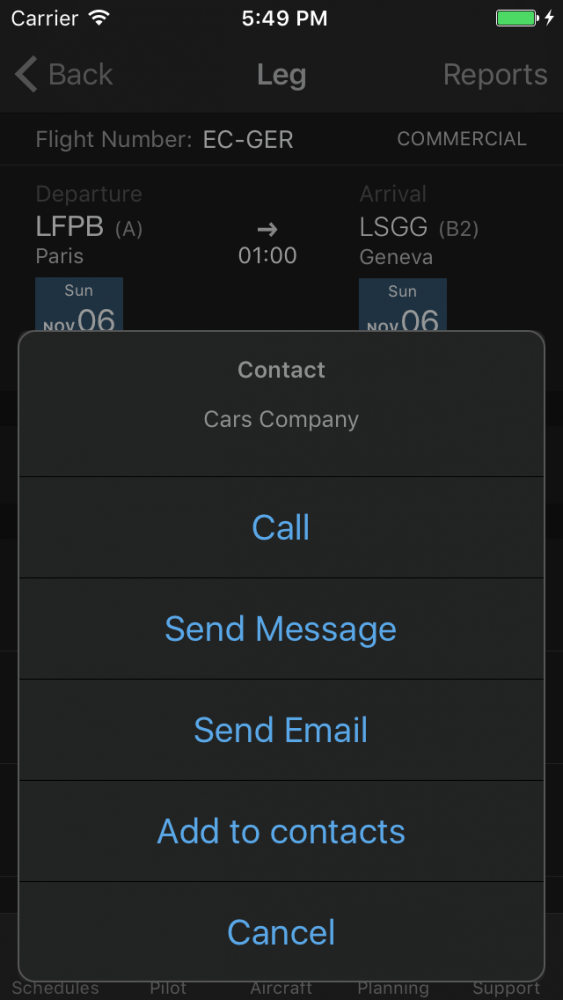
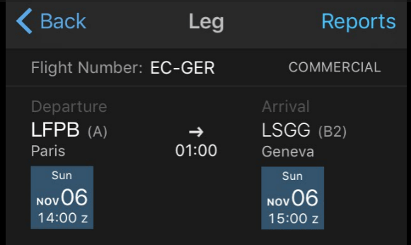
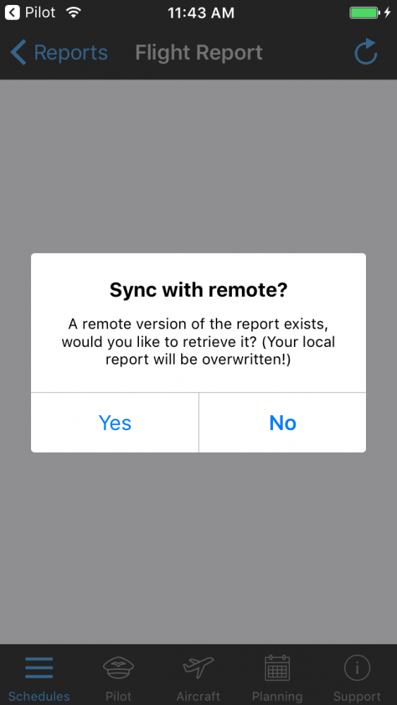
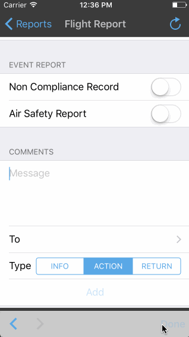

Pilot App¶
Login¶
Start the OpenJet Pilot App on your device. Choose your company, enter username/password and click on Sign In.
Go to the Support tab to sign out.
Schedules¶
The default view of the app is the schedules view. It displays your coming duties and rests.
Refresh¶
On all views with legs list, refresh of data is done with a “pull to refresh” (slide down) :
Date module¶
Throughout the app, the dates and times are shown in blue squares. Clicking on it will switch between UTC Time (z) and Local Time (L).
Duties¶
Darker sections are located before and after a group of activities which belong to the same duty period. The first section displays date, time and location of the duty start as well as the Flight Duty Period (FDP) duration and the nature of the duty (Split/Extended). Below the duration is the maximum duty time of the day.
The last section displays date, time and location of the end of the duty, as well as the duration of the Duty Period (DP).
Note
Clicking on Activities tab will display the activities without duty/rest information.
Rests¶
Rest periods are shown between duties with their effective duration next to the Clock icon and the next available reporting time depending on minimum FTL rest (Next Available Check In).
Activities¶
Activities are flights or any other activity scheduled by the company (office work, training, hotel, positioning etc.).
The chevron on the right enables to access further details. It can be of three different colors:
- Orange : acknowledgment is needed.
- Blue : All data is acknowledged.
- Green : Flight report validated (for past flights only).
In case of change, the chevron and the updated information will turn orange: acknowledgment is needed.
ACK¶
The acknowledgment can be done in two different ways:
- Left to right swipe on activity and push on ACK button.
- In the detailed view, button on the top right corner.
Deleted flights/ Unassigned flights
Deleted flights (or flights assigned to other crew) are shown by clicking on the red bin. All deleted flights must be ACK’ed (with a left to right swipe) to remove the bin.
Activities Details¶
Clicking on the activity or flight will display all available details.
Passenger are displayed with nationality, passport number and weight. A star on the passenger indicates the lead passenger.
You can call or send a message to any contact (if available) by clicking on the contact symbol.
Reports¶
Reports are available two hours before start of the leg. Click on the top right corner of the flight details to access reports:
You can then access to flight report and fatigue report. Color code is :
- Orange : report is not validated,
- Green : validated by captain and in read-only access.
The fatigue report is to be filled for the last leg of the duty depending on you company’s procedures.
A flight report can be ‘submitted’ or ‘submitted and validated’ (captain only). Submission stores the current report on the server and then can be retrieved by the other pilot. Once the captain has ‘submitted and validated’, the reports is no longer editable.
Note
You need internet connection to either “submit” or “submit and validate” a report.
Upon opening, if a report is available on the server, this Sync messages appears:
Note
The refresh button on the top right corner retrieves the report on the server, all changes applied in the current version are lost.
Fuel¶
Black values must be filled, gray values are automatically calculated.
The remaining fuel is transferred to the next report, providing you refresh your data on the schedules view.
Comments¶
Comments are to be send to one on several groups. Groups are managed by the company admin. User of the group will receive an email notifications and comments will be stored in OpenJet database.
Pilot¶
The pilot view is split in two views:
Flight Log¶
This is the history of your flights. You may access a flight report through this view. It also allows you to fill a flight report which is due for more than 24 hours.
Status¶
Flight Time limitation counter and expiration dates (Airport qualification, training, licence etc…). An orange date is expiring in less than 90 days and a red one is expired.
Note
For Chief Pilot role, the All Flights view is available for the full company flight schedule.
Aircraft¶
Read only information regarding the fleet.
FOB and handover fields are updated with the latest flight report.
Planning¶
This view displays you monthly planning. Click on a day to view details. The color bars indicate that at least one activity of the type is scheduled on a day.
- Magenta : OFF days, Holidays, Sick Leave etc.
- Blue : Flights
- Green: Other ground activities